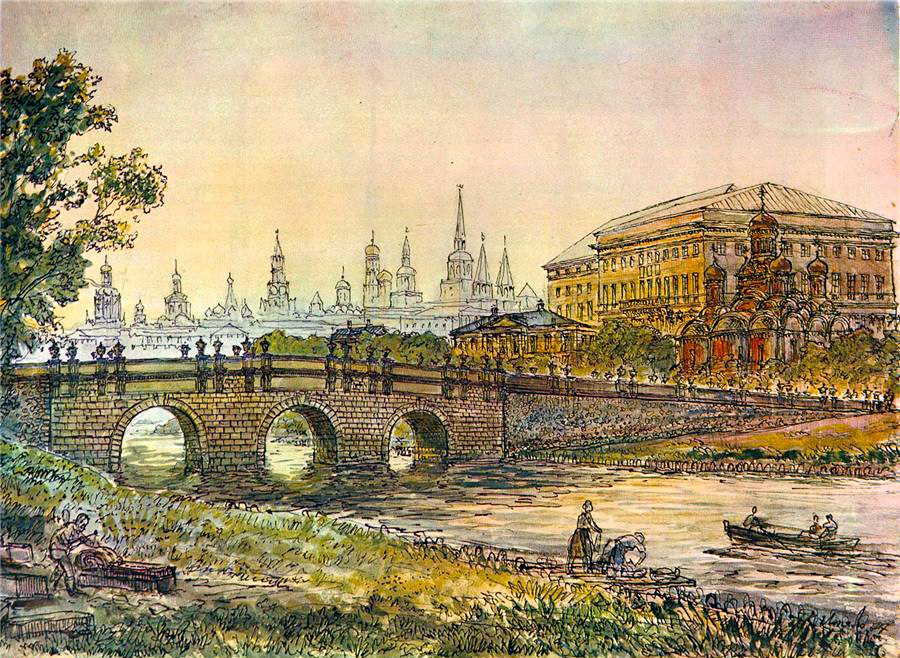

Басманные хроники. Путешествие через вселенные
Интерактивная игра-квест по исторической Москве XVIII века
Аннотация проекта
Проект ориентирован на широкую аудиторию, включая школьников, студентов, историков и туристов. В игре будет реализована возможность нелинейного взаимодействия с сюжетом, где каждое решение игрока будет иметь влияние на развитие истории. Игроки смогут путешествовать по детализированным историческим локациям, таким как Кремль и другие известные достопримечательности, взаимодействовать с персонажами и решать головоломки, что делает процесс увлекательным и интерактивным. Отдельное внимание уделено актуальности проекта, как в контексте образовательных возможностей, так и в плане повышения интереса к культурам и традициям Москвы среди молодежи. Игра будет способствовать укреплению национальной идентичности, предлагая игрокам погружение в исторические события и факты. В решении ряда задач проекта, включая разработку концепции игры, выбор технологий (движок Godot), создание прототипа и модуля тестирования, потребуется слаженная работа команды, состоящей из аналитиков, программистов и дизайнеров. Хотя проект сталкивается с определенными вызовами, связанными с технической сложностью, финансовыми рисками, необходимостью соблюдения юридических норм и разработкой эффективной маркетинговой стратегии, конечный продукт имеет высокий образовательный и развлекательный потенциал. Игровой проект «Басманные хроники. Путешествие через вселенные» представляет собой важный шаг к популяризации исторического наследия Москвы, направленный на использование современных цифровых технологий для создания увлекательного и познавательного опыта.
🕰️ Временные прыжки
Перемещайтесь между эпохами и влияйте на ход истории!
🎮 Интерактивные квесты
Решайте головоломки и находите артефакты.